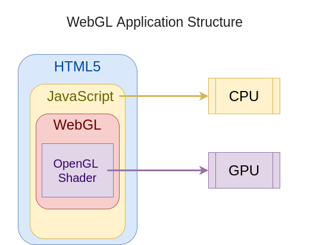

Web Graphics and Animations with PixiJS
Created for
Created by

What is WebGL?
What is WebGL?
Overview
WebGL (Web Graphics Library) is a JavaScript API for rendering interactive 2D and 3D graphics within any compatible web browser without the use of plug-ins.
(WebGL @wikipedia), like Adobe Flash Player.- WebGL is an API based on OpenGL ES 2.0 and allows a web page to perform 3D rendering in an HTML <canvas> element.
- WebGL programs consist of control code written in JavaScript and special effects code that is executed on a computer's GPU (Graphics Processing Unit).
- Creating astonishing animations with WebGl requires knowledge of 2D/3D Graphics and mathematics behind.
- What can we do with WebGL? Check WebGL Samples
WebGL Application Structure
{kind=link}
WebGL - simple demo
See the Pen basic 2D WebGL animation example by Iva Popova (@webdesigncourse) on CodePen.
PixiJS:introduction and setup
PixiJS:introduction and setup
What is Pixi.js
- PixiJS is a rendering library which allows you to create rich, interactive graphics, cross platform applications, and games without having to dive into the WebGL APIs
- Resources:
- Official docs
- PixiJS Galery
Create your first PixiJS app with CDN
- Get the latest pixi version from a CDN.
- Include it in your HEAD section
- Test pixi
function testPixi() {
let type = "WebGL"
if(!PIXI.utils.isWebGLSupported()){
type = "canvas"
}
PIXI.utils.sayHello(type);
}
testPixi()
Pixi Basic concepts
Pixi Basic concepts
Application
- The
PIXI.Applicationobjects is the start point of our pixi app. - It initialize the area for aour PIXI animation
- Reference: PIXI.Application
// Create a Pixi Application Object
let app = new PIXI.Application({width: 256, height: 256});
// Let Pixi create a canvas attach it in the HTML document
document.body.appendChild(app.view);
// console.dir(app.view);
stage object
- The
stage objectis the root container for all the visible things in our scene. - We put all of our sprites inside the stage and they will be rendered on the canvas
- sprite is an image that we can control with code
- the
stage objectis aPIXI.Containerobject - Reference: stage object
- Reference: PIXI.Container
Sprites
In computer graphics, a sprite is a two-dimensional bitmap that is integrated into a larger scene, most often in a 2D video game.
( Sprite @wikipedia )- A Sprite can be moved on-screen and otherwise manipulated as a single entity.
- There are three main ways to create a Pixi Sprite object:
- From a single image file.
- From a sub-image on a tileset. A tileset is a single, big image that includes all the images you'll need in your game.
- From a texture atlas (A JSON file that defines the size and position of an image on a tileset.)
- After a sprite is created we must add it to the stage in order to see it!
Simplest Sprite - Example
let catImagePath = "../../assets/images/Siberian_cat_patronus.png";
// create sprite
let sprite = PIXI.Sprite.from(catImagePath);
// add sprite to the stage
app.stage.addChild(sprite);
Texture
- Before we can make a sprite, we need to convert an ordinary image file into a WebGL texture
- A Texture stores the information that represents an image
- Pixi uses a texture cache to store and reference all the textures your sprites will nee
- For optimization and efficiency it’s always best to make a sprite from a texture that’s been pre-loaded into Pixi’s texture cache
loader object
- Pixi
loader objectloads an image file and convert it into a texture
PIXI.loader
.add("path/to/image.png")
.load(build);
function build() {
//This callback will run when the loader has finished loading the image
}
loader object - example
let catImagePath = "../../assets/images/Siberian_cat_patronus.png";
app.loader
.add('cat',catImagePath)
.load(build);
function build() {
// Create a new texture
const texture = app.loader.resources.cat.texture;
// create sprite
let sprite = new PIXI.Sprite(texture);
// add the srite to the stage
app.stage.addChild(sprite);
}
ticker object
- A
ticker objectis an animation loop that you can add callbacks to - Reference: PIXI.Ticker
app.ticker.add(() => {
// each frame we spin the cat around a bit
sprite1.rotation += 0.01;
});
PixiJS Examples
PixiJS Examples
Self-Learning && Live Demo
- Resources: pixijs.io/examples
These slides are based on
customised version of
framework